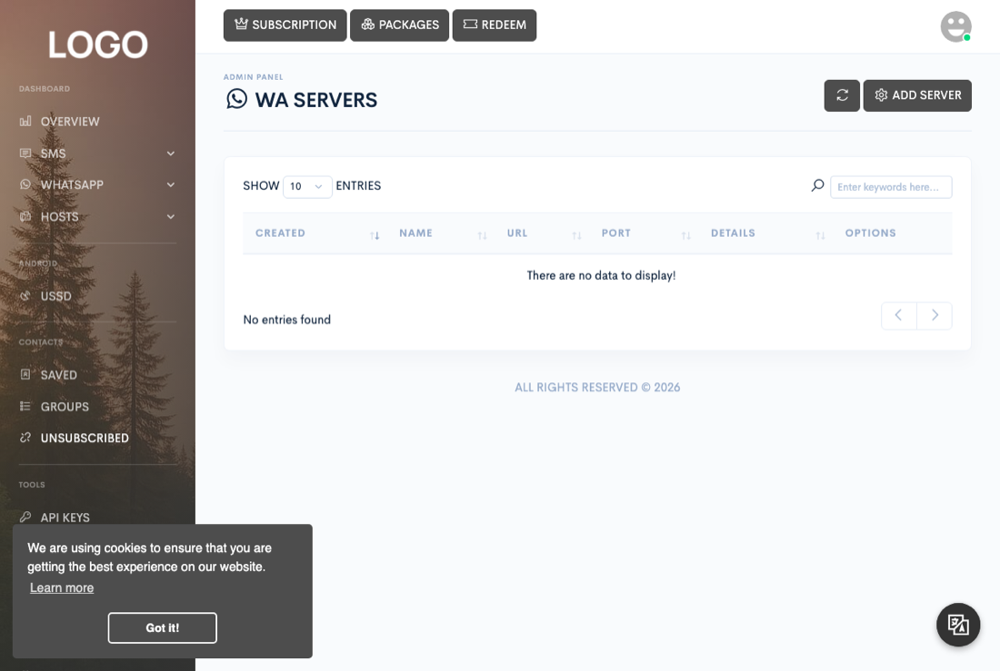
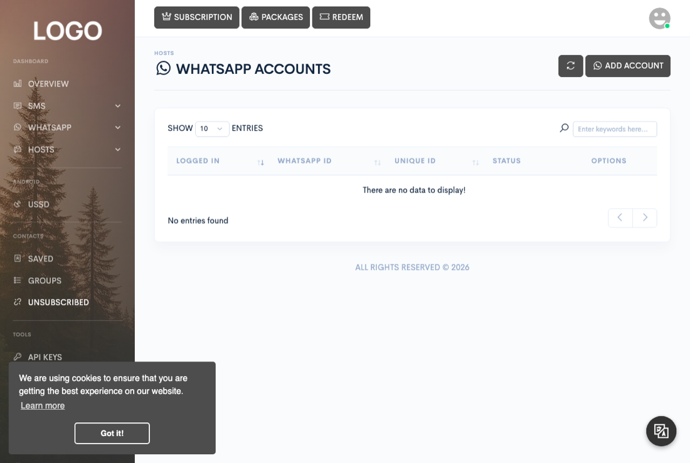

Servers & devices
WhatsApp server
Set up and run the WhatsApp server that your Zender installation talks to, link WhatsApp accounts to it, and keep it reachable even when it can't get a public IP address of its own.


WhatsApp is not sent by the PHP application itself. It's sent by a standalone
binary that you run as a separate process next to Zender, shipped
ready to run in your release's WhatsApp/prebuilt/ folder. The PHP app
talks to it over plain HTTP, authenticated with a shared secret; the binary owns the
actual WhatsApp connections. This is the single most important piece of
infrastructure to get right before you tell customers WhatsApp works — if it's down
or misconfigured, every WhatsApp feature in the dashboard silently stops working.
Each running server is registered in the dashboard under Admin → WA Servers. A Zender installation can have more than one WhatsApp server registered — useful for spreading accounts across machines or assigning specific servers to specific subscription packages.
Choosing a binary
Three platforms ship as tested, ready-to-run binaries in WhatsApp/prebuilt/:
| File | Platform |
|---|---|
titansys-whatsapp-linux | Linux x86-64 |
titansys-whatsapp-arm64 | Linux ARM64 |
titansys-whatsapp-macos | macOS (Apple Silicon) |
None of these binaries has any system library dependencies to install on the target machine — copy the file over and run it.
Running it
Copy the binary to your server, make it executable, and start it with at minimum a secret key:
chmod +x titansys-whatsapp-linux
./titansys-whatsapp-linux --key="YOUR_SECRET_KEY" --port=8899--key is the only required flag — it's the shared secret that Zender
and this server use to authenticate requests to each other, and it must match the
secret you enter for this server in the dashboard. --port defaults to
8899 if omitted; --host defaults to the wildcard
0.0.0.0. Run ./titansys-whatsapp-linux --help on the
binary for the full flag list, including optional outbound proxy support
(--proxy-host, --proxy-port, --proxy-protocol,
--proxy-username, --proxy-password) and the ngrok
tunnelling flags covered below.
You can keep the settings in a file instead of passing flags. Copy
config.example.json (in WhatsApp/src/) to
config.json beside the binary and fill in
server.secret. Flags still win over the file where both are set.
123456 or changeme, but it cannot tell
a weak secret of your own invention from a strong one.
& background job. If the
WhatsApp server goes down unsupervised, every linked account stops sending and
receiving until someone notices and starts it back up by hand.
Registering it in Zender
In Admin → WA Servers, click Add server and fill in
the server's name, its URL and port (the same host and port the binary is listening
on), and the secret — this must be exactly the value you passed to
--key. You can also cap how many WhatsApp accounts this server accepts
and restrict which subscription packages are allowed to use it.
Linking an account
Accounts are linked from Hosts → WhatsApp, not from the WA Servers admin screen — WA Servers only registers the server process itself. Click Add WhatsApp account, pick which registered server to use, and click Link. Zender asks the server to create a new session, the server generates a WhatsApp Web-style QR code, and the dashboard displays it for you to scan from your phone's WhatsApp app (Linked devices → Link a device). Once scanned, the session is established and persists in that server's own local session store — it is not stored by the PHP application or in Zender's database, so if you move an account to a different WhatsApp server it has to be linked again from scratch.
Running it without a public IP address, using ngrok
If you're hosting the WhatsApp server on a machine that isn't reachable from the internet — a home connection, a machine behind a router with no port forwarding, an Android phone (see below) — Zender still needs some public address to reach it on. The binary has built-in support for ngrok, a tunnelling service, so you don't have to buy or configure a public IP yourself.
Sign up for a free ngrok account and copy your authtoken from your ngrok dashboard.
Then start the binary with the token and a comma-separated list of every Zender
site that should be updated automatically (each one prefixed with whichever scheme,
http or https, that site actually runs under):
./titansys-whatsapp-linux --key="YOUR_SECRET_KEY" \
--ngroktoken="NGROK_AUTHTOKEN" \
--ngrokserver="site-one.example.com,site-two.example.com"Running it on an Android phone
Because the binary has no system library dependencies, you're not limited to
renting a VPS to run it — an idle ARM64 Android phone works too, which is a cheap
way to add WhatsApp capacity if you already have spare devices lying around. Install
Termux (the F-Droid build, not the Play Store one) and use it to install a Ubuntu
userland — a one-time setup that takes a single long command inside Termux, and
gives you a normal Linux shell to copy the titansys-whatsapp-arm64
binary into and run exactly as you would on a server. Since a phone virtually never
has a public IP, you'll also need ngrok, above, to make it reachable.
Building for Windows
Windows is the one platform without a ready-to-run binary in the release. The full
source ships at WhatsApp/src/, so you can build it yourself. You'll
need Go 1.25 or newer:
cd WhatsApp/src
make build-windows # Windows x86-64 -> dist/titansys-whatsapp-win.exe
WhatsApp/prebuilt/, the Windows build is not pre-built
or tested by Titan Systems as part of the release, so verify it on your own Windows
hardware before relying on it.
Backing up sessions
Each linked account's WhatsApp session lives entirely on the server's own disk, independent of the PHP application. Before replacing or upgrading the binary, back up its session and storage directories rather than assuming an in-place upgrade is safe — there's no migration or rollback tooling built into the binary for its local session data, so a bad upgrade can mean re-linking every account on that server from scratch. Stop the process before copying its data directory to avoid backing up a database file mid-write.